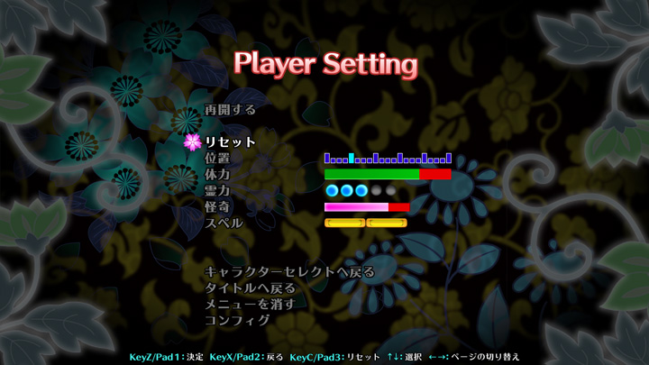

プラクティス
- ２Ｐを相手にして練習するためのモードです。
プラクティスでは制限時間が無く、体力を全て失っても決着がつきません。
ＥＳＣを押すことでプラクティスメニューが開き、各種ゲーム設定が可能です
- ↑↓
- 設定項目を選択
- ←→
- 設定項目のページ切り替え / 選択項目の設定調整
- ボタン１
- 設定項目の決定 / 設定の確定
- ボタン２
- メニューを閉じる / 設定変更のキャンセル
- リセット
- プレイヤーの位置、パラメータを初期化します
ボタン３でも行えます
- 位置
- リセット実行時、２Ｐ側の自動位置補正で移動する左右位置を設定します
- 体力
- 体力量を指定します
- 霊力
- 霊力量を指定します
- 怪奇
- 怪奇ゲージ量を指定します
- スペル
- スペルゲージ量を指定します
- ２Ｐ動作
- ２Ｐ側の自動動作を設定します
- ＣＯＭ難易度
- ２Ｐ動作の指定をＣＯＭにした際の難易度
- カウンターヒット
- 攻撃を当てた際のカウンターヒットの有無を設定します
- ガード
- ２Ｐがこちらの攻撃をガードするかを設定します
- 結界ガード
- ２Ｐがこちらの攻撃を結界ガードするかを設定します
- 復帰
- ２Ｐが吹き飛んだ際の復帰の有無と方向を設定します